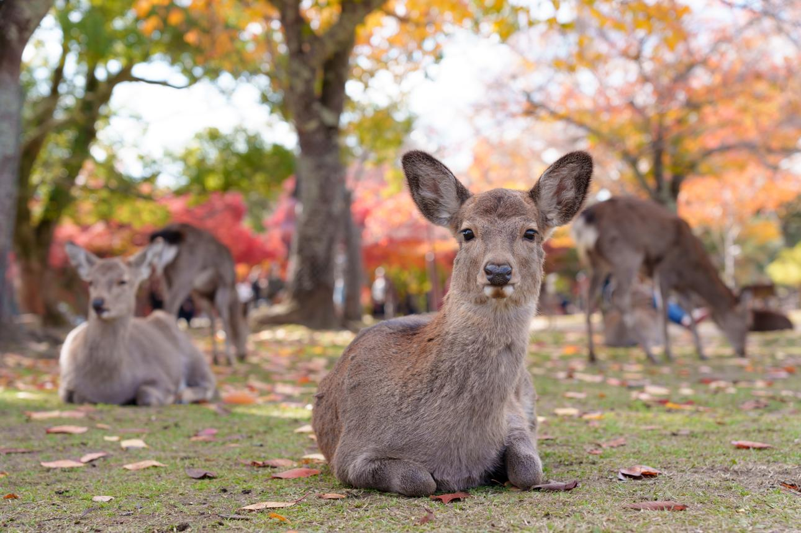
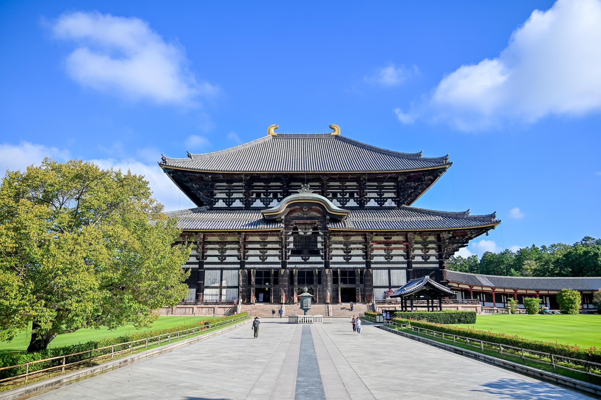
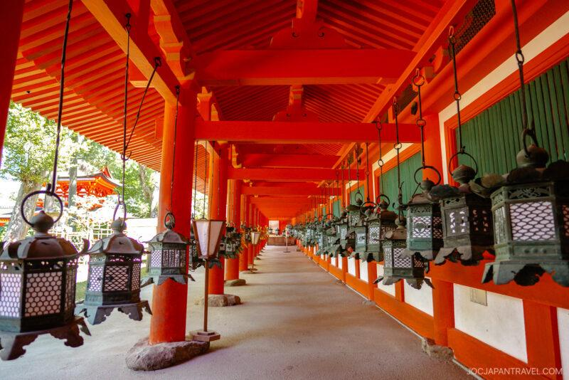

奈良公園
奈良最著名的景點之一。 在廣闊的公園裡， 可以近距離觀察自由活動的鹿。
與可愛的鹿群相遇， 感受古都的自然與歷史。
奈良是日本歷史悠久的古都， 擁有豐富的文化遺產與自然景觀。 最具代表性的奈良公園， 可以看到自由活動的鹿群。
探索奈良最具特色的自然與文化景點

奈良最著名的景點之一。 在廣闊的公園裡， 可以近距離觀察自由活動的鹿。

日本著名的佛教寺院， 以巨大的佛像和壯觀的 大佛殿聞名。

擁有朱紅色神社建築、 石燈籠與美麗的森林步道， 充滿傳統文化氣息。
你對奈良了解多少？ 完成三道題目，看看自己能得幾分！